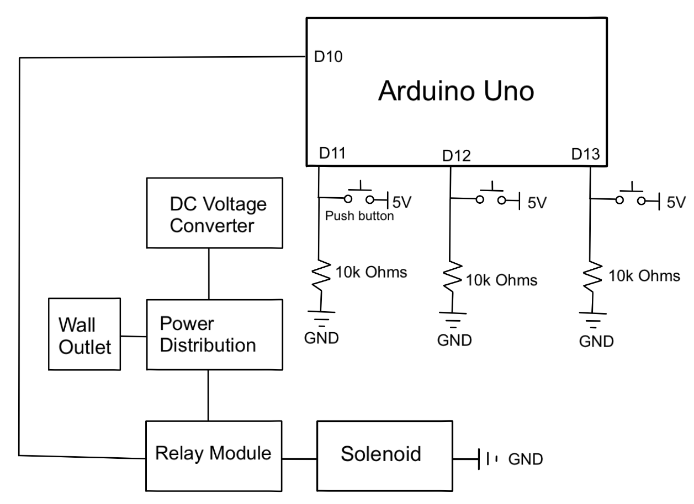

Electrical Design Overview

All electrical components in our project are powered by an Arduino Uno connected to a power distribution.
Clock Puzzle
On the underside of the clock and top plate is a reed switch. When the minute hand of the clock is placed above it, the switch activates. A servo motor attached to the clock’s hexshaft will then move the rotate the clock to reveal the next puzzle.
Key Box
The pie lattice on the second puzzle has many false buttons. The three correct buttons however, each have a push button underneath them that is connected to the main circuit. When all three of these buttons are pressed at the same time, a relay activates, causing the solenoid to push the key box out.